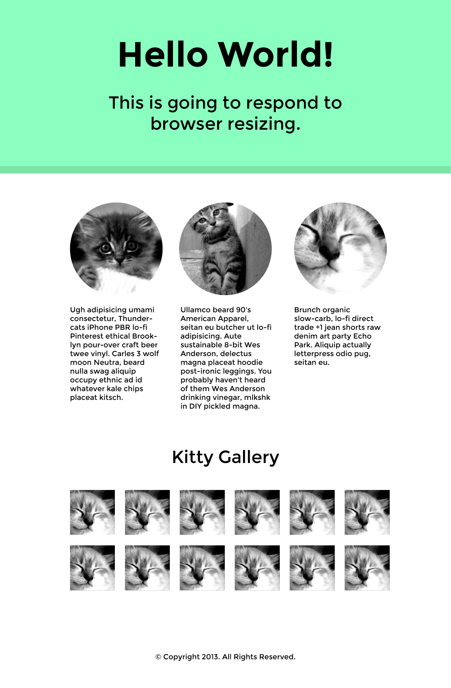

Responsive Design
Class 4
Organization and architecture
Organization and architecture
Gallery pictures per row goes 2 to 3 to 4 to 6
Changes in copy
Internationalization
Horizontally centering groups of things
Vertically centering things
Differences between Firefox px and Webkit px
Why is this important?
It's easy for any website's style to get out of hand, but a responsive one will already by a bigger project. If you don't pay attention to refactoring and cleaning up your code as you go along, you will accumulate a lot of tech debt.
Follow these people on Twitter:
Responsive Design (Ethan Marcotte)